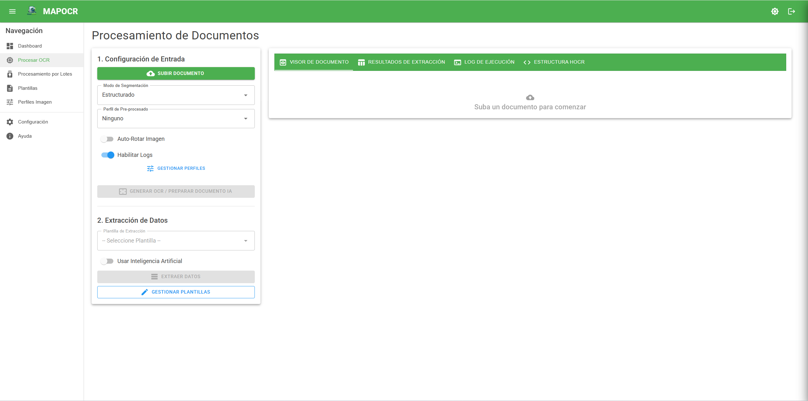
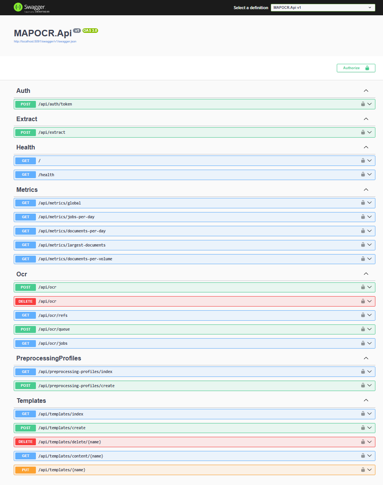
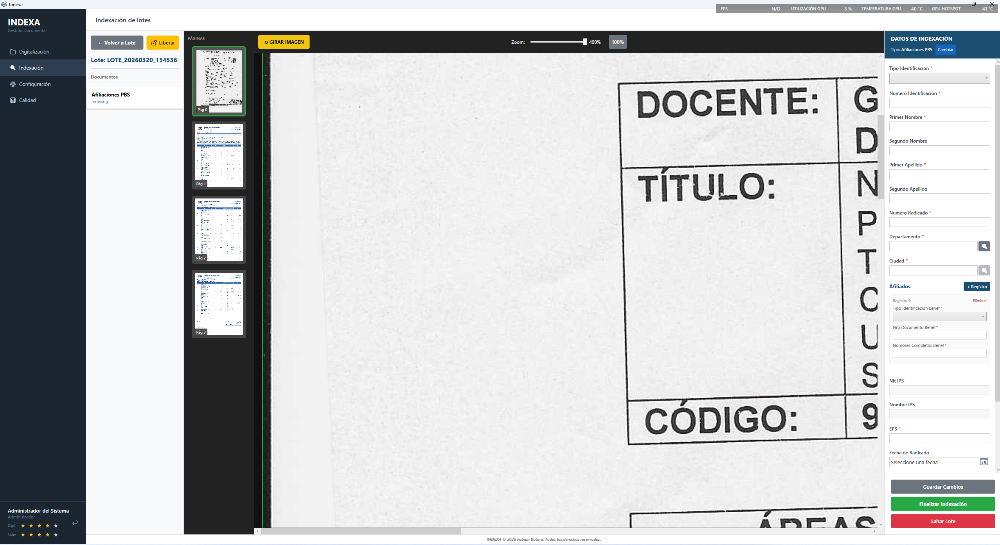
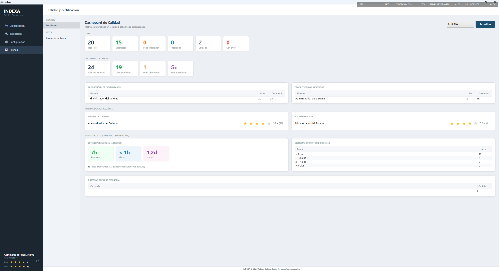
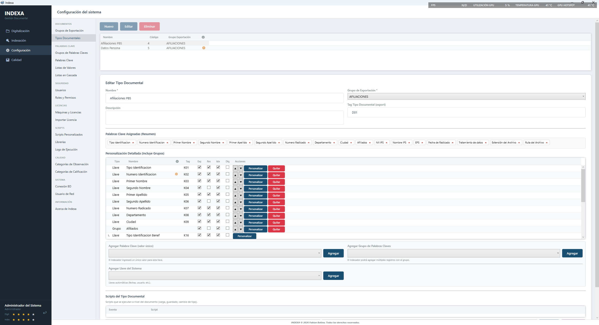
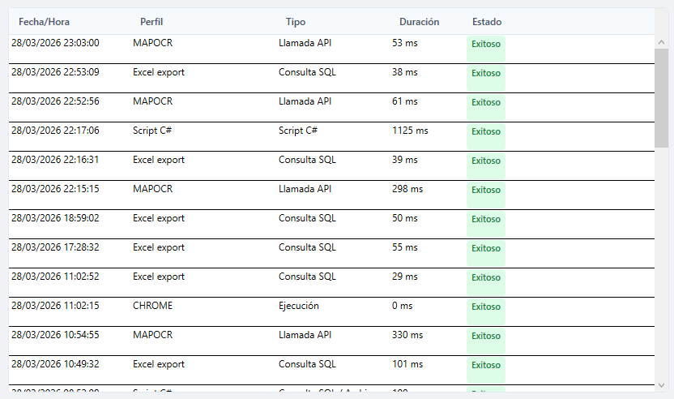
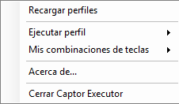

Software Empresarial · Fabián Botina
Optimiza. Extrae.
Haz más en menos tiempo.
Tres herramientas que simplifican tareas complejas en la captura, extracción y gestión de documentos e información empresarial.
Software Empresarial · Fabián Botina
Tres herramientas que simplifican tareas complejas en la captura, extracción y gestión de documentos e información empresarial.
MAPOCR aplica OCR al documento, almacena el resultado indexado y permite aplicar cualquier plantilla de extracción cuantas veces necesites sin volver a procesar el archivo. Disponible como API REST y como cliente CLI.


Mismo documento = mismo hash SHA-256. MAPOCR detecta el duplicado y evita reprocesarlo automáticamente.
Tesseract para operaciones frecuentes sin costo. GPT-4o para documentos de diseño complejo o baja calidad de imagen.
Procesa y extrae documentos directamente desde terminal. Ideal para scripts de automatización y pipelines de datos.
Campos encontrados, confianza promedio, motor usado y tiempo de ejecución registrados en cada extracción.
INDEXA convierte documentos físicos en registros digitales estructurados con validación de datos, reglas por campo y scripts C# personalizados. Resultado: índice TXT + imagen listo para importar en OnBase u otro sistema documental.



Assembly guardado en BD, ejecución en milisegundos. Log detallado de cada llamada con errores.
Exporta índice TXT + imagen en el formato exacto que espera OnBase u otros sistemas GED configurados.
Métricas de productividad, calificación de lotes y tiempos del equipo en tiempo real.
Solo los equipos físicos registrados con licencia asignada pueden digitalizar o indexar documentos.


CAPTOR captura datos de cualquier aplicación de escritorio o web, los consulta contra tus fuentes de información y presenta el resultado al operario en segundos. Menos búsquedas manuales, decisiones más ágiles.
Selecciona el elemento en pantalla y CAPTOR captura el selector automáticamente, sin conocimiento técnico.
Combinaciones de teclas para ejecutar perfiles sin interrumpir el flujo del operario en su aplicación actual.
Busca y abre automáticamente un archivo, carpeta o URL según la información procesada. Cero búsqueda manual.
Editor con syntax highlighting, compilación dinámica y testing con F5 directo desde el diseñador.
Escríbeme para conocer cómo MAPOCR, INDEXA o CAPTOR se adaptan a tu empresa.